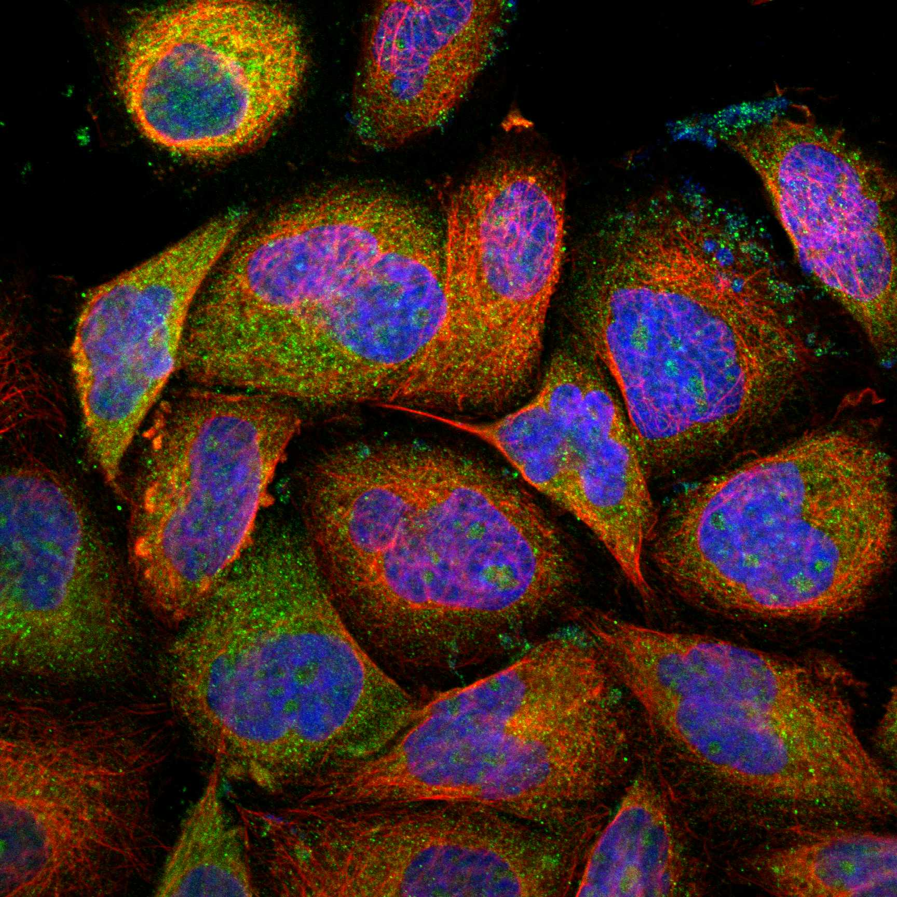
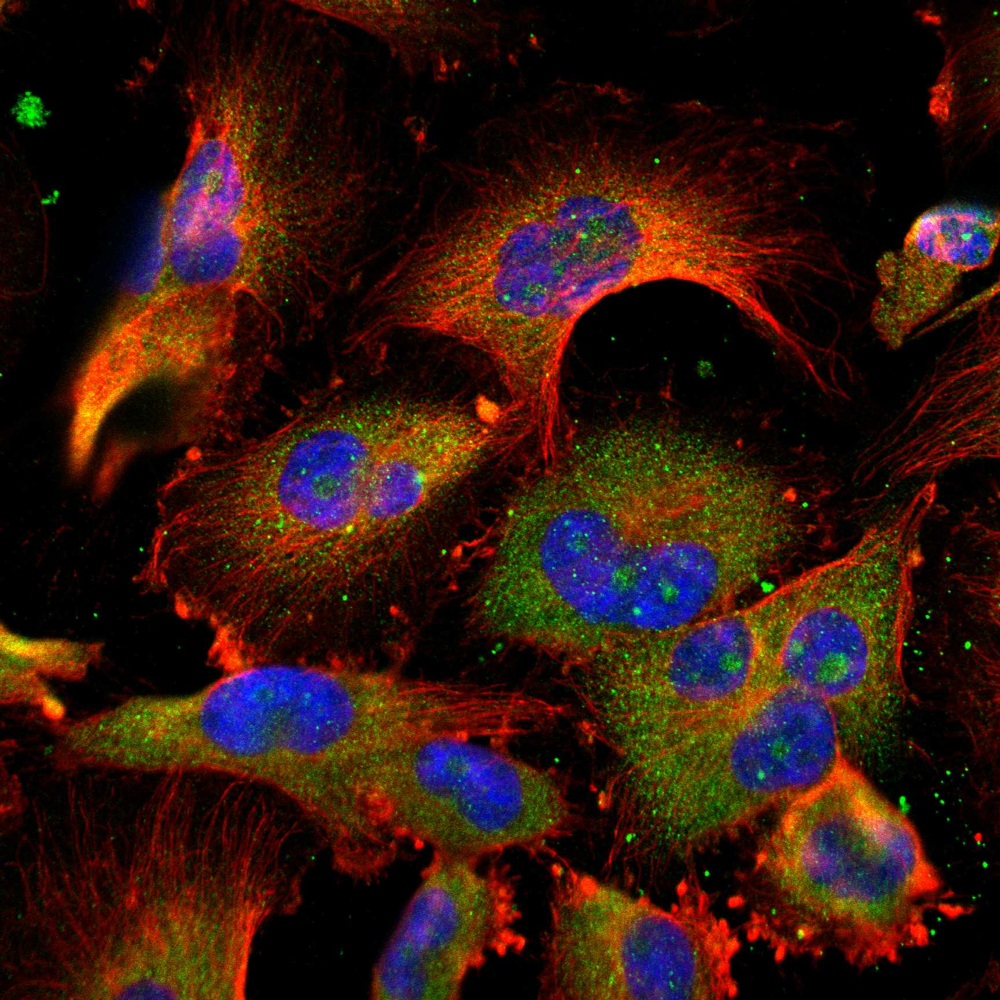
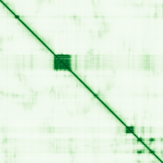

type: protein-evaluation gene: "MIS18BP1" date: 2026-01-30 tags: [protein-scout, nuclear-protein, evaluation] status: scored ---
MIS18BP1 核蛋白评估报告
1. 基本信息
| 项目 | 内容 |
|---|---|
| 基因名 | MIS18BP1 |
| 别名 | M18BP1, KNL2 |
| 基因全称 | MIS18 binding protein 1 |
| 蛋白名称 | Mis18-binding protein 1 |
| 蛋白大小 | 1132 aa |
| UniProt ID | Q6P0N0 |
| 评估日期 | 2026-01-30 |
2. 评分总览
| 维度 | 得分 | 满分 | 加权后 | 关键证据摘要 |
|---|---|---|---|---|
| Nucleus 核定位特异性 | 8/10 | x4 | 32 | HPA: Nucleoplasm |
| Size 蛋白大小 | 8/10 | x1 | 8 | 1132 aa |
| Novelty 研究新颖性 | 10/10 | x5 | 50 | PubMed: 17 篇 |
| 3D Structure 三维结构 | 6/10 | x3 | 18 | AlphaFold pLDDT=48.3 |
| Domain 调控结构域 | 7/10 | x2 | 14 | 无已注释染色质调控结构域 |
| PPI Network PPI网络 | 4/10 | x3 | 12 | STRING+IntAct+GO-CC |
| Cross-validation 互证加分 | — | max +3 | +1.0 | — |
| 原始总分 | 135/183 | |||
| 归一化总分 | 73.8/100 |
3. 详细分析
3.1 核定位证据
| 来源 | 定位 | 可信度 | |
|---|---|---|---|
| Protein Atlas (IF) | U-251MG, A-431 | HPA validated | |
| UniProt | Nucleus | — | |
| GO-CC | GO:0005634 Nucleus (IBA | IEA) | — |
IF 图像:  
3.2 蛋白大小评估
1132 aa，中等偏大
3.3 研究现状
| 指标 | 数值 |
|---|---|
| PubMed 总数 | 17 篇 |
| 最早发表年份 | 2026 |
主要研究方向:
- 功能研究尚不充分，属新颖蛋白
关键文献: 1. Parashara P et al. (2024). "PLK1-mediated phosphorylation cascade activates Mis18 complex to ensure centromere inheritance.". *Science*. PMID: 39236175 2. Ansari M et al. (2025). "Whole Genome Sequencing of "Mutation-Negative" Individuals With Cornelia de Lange Syndrome.". *Hum Mutat*. PMID: 40677927 3. Mikolajewicz N et al. (2024). "Functional profiling of murine glioma models highlights targetable immune evasion phenotypes.". *Acta Neuropathol*. PMID: 39592459 4. Thamkachy R et al. (2024). "Structural basis for Mis18 complex assembly and its implications for centromere maintenance.". *EMBO Rep*. PMID: 38951710 5. Spiller F et al. (2017). "Molecular basis for Cdk1-regulated timing of Mis18 complex assembly and CENP-A deposition.". *EMBO Rep*. PMID: 28377371
评价: PubMed 17 篇，属极度新颖蛋白，研究空间充足。
3.4 三维结构分析
| 指标 | 数值 |
|---|---|
| AlphaFold 平均 pLDDT | 48.3 |
| pLDDT > 90 占比 | 7.4% |
| pLDDT 70-90 占比 | 12.4% |
| pLDDT 50-70 占比 | 8.7% |
| pLDDT < 50 占比 | 71.5% |
| 可用 PDB 条目 | 3 |
PAE 图: 
评价: AlphaFold 预测较低质量，大部分区域无序 (AlphaFold v6, pLDDT=48.3, >90=7%, 70-90=12%, 50-70=9%, <50=72%. PDB entries: 1WGX, 8S31, 9F5W)
3.5 结构域分析
| 来源 | 结构域 |
|---|---|
| UniProt | — |
染色质调控潜力分析: 无已注释染色质调控结构域
3.6 PPI 网络
实验验证互作 (IntAct, physical association):
| Partner | 方法 | PMID | 功能类别 | 调控相关？ | ||||||||
|---|---|---|---|---|---|---|---|---|---|---|---|---|
| intact:EBI-3905936 | uniprotkb:Q3T1A4 | uniprotkb:A8K777 | ensembl:ENSP00000341940.2 | ensembl:ENSP00000380525.2 | MI:0007(anti tag coimmunoprecipitat | PMID:pubmed:28514442 | doi:10.1038/nature22366 | imex:IM-25778 | — | — | ||
| intact:EBI-1104552 | uniprotkb:Q542Z0 | uniprotkb:B2R562 | ensembl:ENSP00000290130.3 | MI:0007(anti tag coimmunoprecipitat | PMID:pubmed:28514442 | doi:10.1038/nature22366 | imex:IM-25778 | — | — | |||
| intact:EBI-21554172 | uniprotkb:A8K2A6 | uniprotkb:Q547R3 | uniprotkb:Q8WXS7 | uniprotkb:Q9UHM3 | ensembl:ENSP00000303092.3 | ensembl:ENSP00000436836.1 | MI:0007(anti tag coimmunoprecipitat | PMID:pubmed:28514442 | doi:10.1038/nature22366 | imex:IM-25778 | — | — |
| intact:EBI-2685636 | uniprotkb:B3KVH7 | uniprotkb:Q9H2T0 | uniprotkb:D3DRE7 | ensembl:ENSP00000357881.5 | ensembl:ENSP00000478056.1 | MI:0007(anti tag coimmunoprecipitat | PMID:pubmed:28514442 | doi:10.1038/nature22366 | imex:IM-25778 | — | — | |
| intact:EBI-536879 | uniprotkb:Q96BX7 | ensembl:ENSP00000220514.3 | MI:0007(anti tag coimmunoprecipitat | PMID:pubmed:28514442 | doi:10.1038/nature22366 | imex:IM-25778 | — | — | ||||
STRING 预测互作 (combined score >0.4):
| Partner | Score | 功能类别 | 调控相关？ |
|---|---|---|---|
| OIP5 | 0.0 | — | — |
| MIS18A | 0.0 | — | — |
| HJURP | 0.0 | — | — |
| CENPC | 0.0 | — | — |
| CENPI | 0.0 | — | — |
| CENPA | 0.0 | — | — |
| RBBP7 | 0.0 | — | — |
| RACGAP1 | 0.0 | — | — |
已知复合体成员 (GO Cellular Component):
- 暂无 GO-CC 复合体注释
PPI 互证分析:
- STRING + IntAct 共同确认: 0
- 仅 STRING 预测: 15
- 仅 IntAct 实验: 12
- 调控相关比例: 2/15 (13%)
评价: PPI 得分 4/10。
3.7 多库互证
| 维度 | 来源 | 结果 | 是否一致 |
|---|---|---|---|
| 三维结构 | AlphaFold + PDB | pLDDT=48.3, PDB=3 | — |
| 结构域 | UniProt/InterPro | 无注释域 | — |
| PPI | STRING + IntAct + GO-CC | 15/12/0 条目 | — |
| 定位 | HPA/UniProt/GO | Nucleoplasm / Nucleus / GO:0005634 | 一致 |
互证加分明细:
- IntAct+STRING 双源确认 (+0.5)
- PDB 多条目 (>=3) (+0.5)
总分: +1.0 / max +3
4. 总体评价
推荐等级: ★★★ (4/5)
核心优势: 1. 极度新颖 (PubMed 17 篇)，几乎未被研究 2. HPA 确认核定位，高置信度
风险/不确定性: 1. AlphaFold 预测质量中等 (pLDDT=48.3)，部分区域无序 2. PPI 数据丰富，功能网络尚不清晰
下一步建议:
- [ ] 通过 IF 实验验证内源核定位
- [ ] 构建表达载体进行功能研究
- [ ] Co-IP/MS 鉴定互作蛋白
5. 数据来源
- GeneCards: https://www.genecards.org/cgi-bin/carddisp.pl?gene=MIS18BP1
- Protein Atlas: https://www.proteinatlas.org/MIS18BP1
- PubMed: https://pubmed.ncbi.nlm.nih.gov/?term=MIS18BP1
- UniProt: https://www.uniprot.org/uniprotkb/Q6P0N0
- SMART: http://smart.embl.de/
- STRING: https://string-db.org/
- IntAct: https://www.ebi.ac.uk/intact/
- AlphaFold: https://alphafold.ebi.ac.uk/entry/Q6P0N0
PPI 网络（三源综合）
| Partner | Source | Score/Evidence |
|---|---|---|
| 无记录 | — | — |
IntAct 有限记录。无 BioGrid 补充数据。
PAE 图像已获取。结构判断基于 AlphaFold pLDDT 统计。
<!-- DOMAIN_HUMANPPI_REPAIR_START -->
Domain/SMART 与 humanPPI 补充（2026-06-06）
SMART / UniProt domain
| Source | Data | |
|---|---|---|
| UniProt | Q6P0N0 | |
| SMART | SM00717; | |
| UniProt Domain [FT] | DOMAIN 383..469; /note="SANTA"; DOMAIN 875..930; /note="SANT"; /evidence="ECO:0000255\ | PROSITE-ProRule:PRU00624" |
| InterPro | IPR009057;IPR039110;IPR001005;IPR017884;IPR015216; | |
| Pfam | PF09133; |
humanPPI / HPA Interaction
Source: https://www.proteinatlas.org/ENSG00000129534-MIS18BP1/interaction
| Partner | Datasets | AF3/HPA structure |
|---|---|---|
| MIS18A | Intact, Biogrid, Bioplex | true |
| OIP5 | Intact, Biogrid, Bioplex | true |
| BRD1 | Biogrid | false |
| H2BC8 | Biogrid | false |
| KAT7 | Biogrid | false |
| LZTS2 | Biogrid | false |
| MYC | Biogrid | false |
| NINL | Biogrid | false |
<!-- DOMAIN_HUMANPPI_REPAIR_END -->